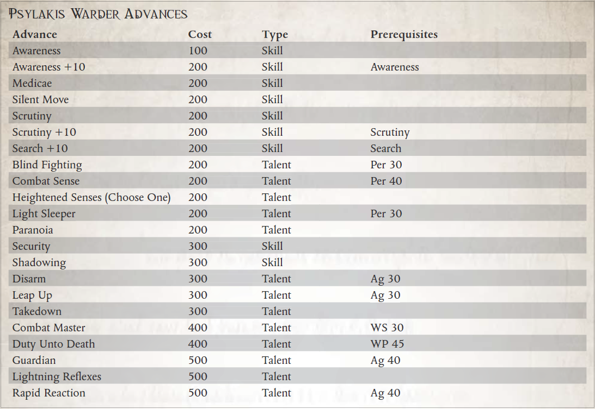

“是的，帝皇保护着……在大口之外，他保护着那些最能保护自己的人。”
——流氓商人戈德里克·乔尔
在险恶的科罗努斯广域，很少有商品比优秀的导航员或星语者更有价值，在边境穿梭的流氓商人不遗余力地保护他们的安全并不少见。 虽然有些人求助于红色学院的导师来提供盲目忠诚的保镖，甚至雇佣 Krooot 雇佣兵来保护他们最宝贵的生命资产，但其他人则倾向于一种更微妙、更确定的方法。 对于那些愿意付出代价的人，Psylakis 兄弟会提供了一个独特的解决方案。
不知道兄弟会第一次出现在Footfall中的确切时间或他们从何而来，但至少两个世纪以来，这个特殊的组织一直在帝皇雕像的阴影下悄悄地开展业务。一些人认为这是一个奉行帝国信条的非正统分支的教派，而另一些人则认为是一个异端邪教，甚至是与毁灭力量结盟的灵能者集团，兄弟会已经
通过提供一种方法来确保他们的导航员和星语者 - 守卫者的安全，对于某些在广域内穿梭的流氓商人来说变得非常宝贵。
兄弟会如何训练守望者的确切方式是鲜为人知的秘密，神秘的仪式通过心灵感应将他们与他们必须守卫的人联系起来。守卫和他们负责保护的人都受到神圣誓言的约束——无论是在圣物上宣誓还是更险恶的东西——不透露 Psylakis 仪式的细节，并且大多数人回避讨论他们之间共享的精神联系。一个莫名其妙但持续不断的谣言在他们身后流传：据说所有 Psylakis 守卫都食用了生长在广域某些世界上的稀有但基本上不起眼的毒蛇叶，他们的许多指控都涉及使用这种药草，咀嚼或放入 lho 棒，以及。这是否是他们的仪式启动的一部分，一种社会惯例，或者仅仅是他们队伍中养成的一种奇怪的习惯，只有守望者才能说。
无论采用何种方法，结果无疑是有效的，并且守望者因其忠诚、顽强的责任感和惊人的保护他们的指控的能力而在整个广域网中备受推崇。声称没有人在 Psylakis Warder 的保护下遭受过非自然死亡的说法无疑是夸大其词，但毫无疑问，兄弟会提供了一些金钱可以买到的最好的安全保障。对于许多 Rogue Traders，更不用说他们的 Astropaths 和 Navigators，这样的投资值得每一个 Throne Gelt。
虽然对潜在守卫的培训和训练是漫长而艰巨的，而且对成功候选人的要求会持续一生，但兄弟会并不缺乏志愿者。成为一名守望者被许多 Footfall 的受压迫者视为通往更美好生活的必经之路。对于其他人来说，这是对他们的技能和决心的考验，是证明他们值得加入少数被选中的人的机会，以保护广域中一些最重要的人。
Psylakis 兄弟会的候选人必须符合某些身体和心理标准，并在兄弟会的大院内接受强化训练和指导。许多人在外人看来完全武断的理由被认为是不够的，这些战士中的大多数继续加入广域网的其他雇佣兵公司或在 Rogue Trader 船上担任安全部队。
那些不洗掉的人可能会继续训练数月甚至数年，磨练他们的技能和感官，直到他们被认为准备好。一旦候选人最终完成培训，潜在的守望者就会被匹配到一项指控，并且两人都经历了秘密仪式，将他们的心灵与死亡联系起来——有些人甚至声称，甚至更远。
所需职业：除导航员、Astropath 或 Ork 之外的任何职业
替代等级：等级 4 或更高 (13,000 xp)
要求：Ag 40，每 35
其他要求：探索者可能没有心理评级或不可触碰的特质。探险者必须接受过 Psylakis 兄弟会的训练，并且必须经历过他们的秘密仪式，这些仪式在守望者和他的冲锋之间建立了精神联系。
好处：探索者获得心灵联结特性。

心灵相通（特质）
先决条件：Ag 40，每 35
当一名守卫和他的负责人经历 Psylakis 仪式时，每个人的思想都会永远与另一个人的思想联系在一起。虽然不是直接的心灵感应链接，允许复杂的口头交流，但守望者和他的负责人不断地意识到对方的存在，以及对方感受到的任何强烈情绪。如果他们在彼此之间的 1 公里 x 看守者的感知奖励之内，守望者就会准确地知道他所照顾的灵能者的位置，并且他可以感知他的冲锋的存在以及最远 1,000 公里以外的一般相对位置。此外，当对受保护的灵能者使用通灵术时，将守护者的意志力加值和感知加值的总和加到灵能者的对抗测试的结果中；守卫也可以将受保护灵能者的意志力和感知奖励的总和加到对抗测试中，以抵抗针对他的心灵攻击。如果守卫和他的冲锋之间的心灵感应连接意外中断（例如死亡或贱民的存在），两者都必须通过挑战（+0）意志力测试或立即遭受 1d5 疲劳。如果其中一人死亡，幸存者会因反冲而遭受 1d10 点精神错乱；如果一个人死于暴力，幸存者将遭受 2d10 点精神错乱值